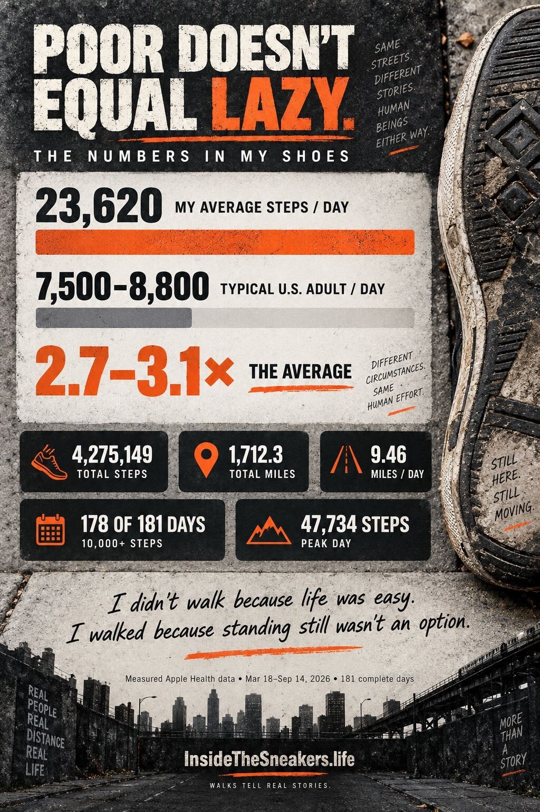

Inside the Sneakers
Oakland, California · Persevering Since ’20
Rock Bottom Has a Basement
A disabled veteran, a father, and a family trying to stay housed in Oakland — documenting what happens when ordinary people fall through the cracks.
Poor Doesn’t Equal Lazy
The Numbers in My Shoes
Over 181 measured days, I averaged 23,620 steps and 9.46 miles a day. Different circumstances. Same human effort.

Welcome to Inside the Sneakers
Why I’m Writing This
I’m Jakob. Husband, father of three daughters, and a 100% disabled Coast Guard veteran. I have a degree in graphic design with an emphasis in typography, and right now, most of my time goes into trying to keep my family housed and getting somebody to explain where our money went.
We’re living in Oakland after two years of homelessness. We have an apartment, but we’re still dealing with eviction notices, disputed damage charges, and safety complaints involving our kids. I’m trying to get a complete accounting of our rent, housing assistance, and payments. How are we still being charged for old damages when we were supposed to be paid up? Where did the money go when I was paying more than my share of rent? Those are pretty straightforward questions. I’m still trying to get straightforward answers.
Meanwhile, I’m almost seven years into fighting for SSDI. Denials, appeals, and a case that’s gone into the federal courts. Still waiting. My kids are growing up through all of this. Their lives don’t pause because somebody hasn’t made a decision.
That’s where we’re at. Trying to get through school, appointments, rent, and everything else while dealing with problems that never seem to get resolved.
I’m writing this as a record of what happened and where things went. The longer you live in something you couldn’t control, the more people forget how it started. I’m trying to hold both ends: why I made the choices I made, and what they cost us.
I don’t wanna be on my deathbed wondering why we lived the way we did. I want my kids to be able to look back and see why we were doing what we were doing, if I’m not there to explain it.
And yeah, I know what it feels like to be judged before anyone asks a single question. Some days it feels like hate, just for showing up. I don’t know if I’m the exception or if I’m fooling myself. Maybe I’ll figure that out. Maybe I won’t. But I’m writing it down so it doesn’t get rewritten by the impressions of biased viewers.
Who knows? Maybe one day they’ll look back at this. People living through history don’t always know what’s happening while it’s happening. They’re just trying to get through each day.
Right now, it feels like everything’s shifting at once with AI, with COVID aftershocks, with how people treat each other, and it hits the poor first and the middle hard, but eventually it touches everyone.
This isn’t me asking for sympathy. It’s me saying what it feels like from here, so the record isn’t just other people’s assumptions.
Continue reading on Medium Read the latest articleContact
Get in Touch
Questions, media inquiries, support, or just want to reach out? Email Inside the Sneakers directly.
ronn@inthesneakers.life